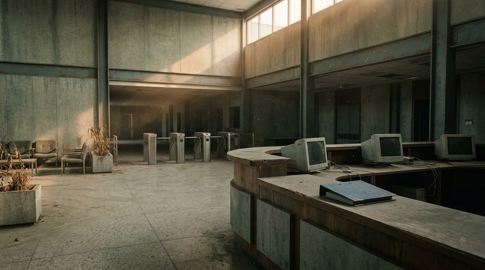
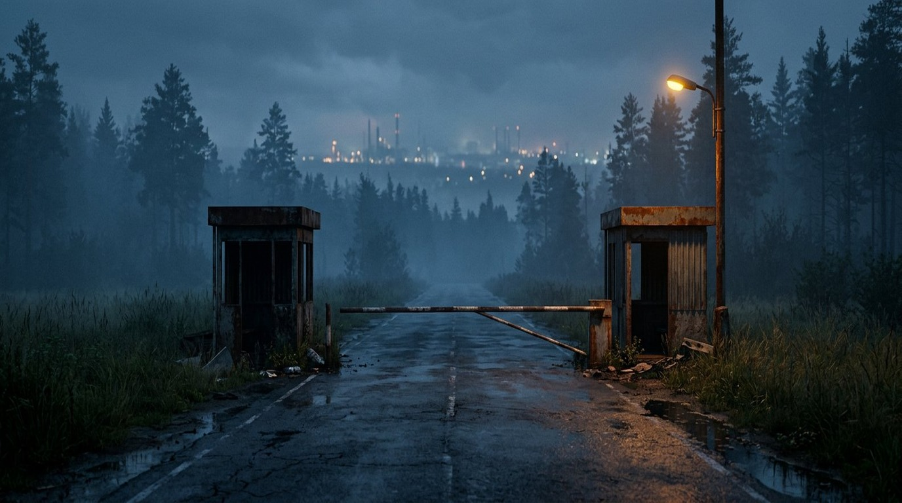

01 / Le territoire
Tarkov est une ville. Norvinsk, une région.
Le jeu situe le conflit dans une région fictive, à la jonction de la Russie et de l’Europe. Une zone économique spéciale englobe notamment les villes de Tarkov et de Norvinsk. Les avantages accordés aux entreprises étrangères créent le cadre dans lequel TerraGroup s’installe.
- Zone économique spéciale
Un cadre juridique favorable aux échanges et aux implantations étrangères.
- Tarkov et TerraGroup
L’activité de la multinationale devient le centre du scandale à Tarkov.
- Port et ravitaillement
L’annonce de RAID y place le poste du logisticien Peacekeeper et la présence de l’ONU.
- Blocus et accès filtrés
Forces russes et maintien de la paix encadrent les issues. L’isolement coupe les flux habituels, pas tous les réseaux locaux.
Pour le cadre : présentation de RAID par BSG et description de Norvinsk transcrite dans le wiki. Cette carte n’infère ni l’emplacement de quartiers ni la forme du périmètre du blocus.
02 / Les forces en présence
Qui défend quoi ?
Le conflit oppose des employeurs, des forces et des réseaux qui ne contrôlent pas les mêmes ressources. Les liens ci-dessous décrivent leurs rôles dans le récit, pas les réactions des bots dans chaque mode.
TerraGroup
La multinationale et ses installations alimentent le scandale. Elle emploie USEC ; le récit place ses recherches et ce qu’elles ont laissé derrière elles au cœur de l’enquête. Toute note qui l’accuse n’est pas à elle seule une preuve.
USEC United Security
Mandatée par TerraGroup, USEC protège ses activités et entrave l’enquête d’après le synopsis. Un opérateur isolé du commandement ne représente pas pour autant toutes les décisions du groupe.
BEAR Battle Encounter Assault Regiment
Force d’origine russe chargée de chercher des preuves des activités illicites de TerraGroup. Elle affronte USEC lors de la phase dite des Contract Wars.
Scavs Habitants et bandes
Des habitants restés dans la zone, dont des bandes armées, survivent en récupérant et revendant ce qui circule encore. « Scavs » ne désigne ni une armée unifiée ni une opinion commune sur le conflit.
Le périmètre du blocus : l’ONU et les forces russes sont présentes dans le cadre officiel. Le blocus est un fait du récit ; une alliance secrète entre une force de maintien de la paix et TerraGroup ne l’est pas. Voir le synopsis recoupé dans le wiki.
03 / Les jalons
Deux chronologies, deux horloges
L’ordre du récit est relatif : on ne connaît pas la date certaine de chaque événement. Le second fil indique quand le studio a publié des éléments, pas quand ils ont eu lieu dans la fiction.
L’ordre des événements dans l’univers
01 / Avant la criseLa zone économique se développe
Le statut spécial de Norvinsk favorise les échanges. TerraGroup investit dans la région ; ses bureaux de Tarkov vont devenir un point de tension.
02 / EscaladeLe scandale TerraGroup
Les soupçons sur les activités de la société conduisent à une confrontation avec les autorités. Le synopsis fait ensuite basculer la tension politique dans un conflit armé.
03 / ConfrontationLes Contract Wars
Nom donné à une phase d’affrontement ouvert entre USEC et BEAR, d’après un entretien d’époque disponible par extrait indexé. Le jeu Contract Wars est apparenté ; les matchs de Hired Ops, autre titre du studio AbsolutSoft, ne datent pas les épisodes d’EFT.
04 / IsolementLe blocus s’installe
Les forces russes et de maintien de la paix bloquent les issues ; des habitants se retrouvent isolés. Les réseaux locaux de troc, de ravitaillement et d’information prennent de l’importance.
05 / Point de départGround Zero, puis Tour
Le prologue met en scène un PMC séparé de son commandement après une explosion près des bureaux de TerraGroup. Il doit sortir par ses propres moyens et découvrir quels contacts restent accessibles.
Sorties et annonces publiques
RAID met le blocus en scène
L’annonce du premier épisode de la série d’Anton Rosenberg décrit Tarkov, les groupes en présence et le poste de contrôle portuaire. Les personnages de la série et ton PMC sont deux perspectives différentes.
Sortie d’Escape from Tarkov 1.0
Les chapitres structurent la progression narrative. La date est confirmée par le billet du premier anniversaire ; l’annonce de la 1.0 date de la veille.
Boreas et le brise-glace
La mise à jour 1.0.5.0 ajoute le chapitre Boreas et l’expédition Icebreaker autour d’un brise-glace de Paradigm Shipping, pris dans le blocus.
04 / Visages de Norvinsk
Ceux qui te parlent encore
Ton PMC, USEC ou BEAR, est le point de vue du jeu. Les Traders lui donnent autre chose qu’un inventaire : des contacts et des versions parfois incomplètes de ce qui se passe.

Le PMC de Tour
Privé d’ordres, il doit établir ses propres contacts. Le jeu commence avec ce qu’il peut observer et entendre, pas avec une explication complète de la chute de Norvinsk.
Skif et Mike, dans RAID
La série suit un BEAR, Skif, et met en scène un USEC, Mike. Ce sont des personnages du film, pas les noms par défaut des PMC joués. Les synopsis des épisodes contiennent des spoilers.
- Therapist
- Elvira Khabibullina, médecin. Premier contact après le tutoriel, elle relie le survivant aux besoins immédiats de la ville et aux autres Traders.
- Peacekeeper
- Tadeusz Pilsudski, logisticien polonais des forces de maintien de la paix. Le poste portuaire de RAID donne un contexte à son rôle dans le ravitaillement.
- Prapor et Skier
- Le premier vient de la logistique militaire ; le second traite dans les réseaux commerciaux de la zone. Le PMC a besoin de leurs contacts, pas seulement de leurs stocks.
- Mechanic et Ragman
- Atelier technique pour l’un, vêtements et matériel pour l’autre. Leurs dialogues et offres matérialisent les circuits qui fonctionnent encore malgré le blocus.
- Fence
- Intermédiaire discret d’un réseau de ventes. Le jeu relie sa réputation au personnage Scav. Son nom réel n’est pas établi dans la fiche des Traders.
05 / De l’univers au jeu
Comment l’histoire apparaît en raid
Les chapitres développent l’enquête du PMC. Ils se distinguent des tâches secondaires d’un marchand, des missions opérationnelles et d’un Battle Pass. Une scène ou une note peut éclairer une intrigue sans débloquer toutes les autres.

Tour
Fait le lien entre le prologue et les premiers marchands. Les dialogues et les repérages font avancer à la fois le récit et l’accès aux cartes.
Démarrer le chapitreDes indices éparpillés
Les notes, témoignages et objets propres à l’histoire suivent plusieurs pistes. L’ordre dans lequel tu les découvres n’est pas forcément celui des événements.
Boreas
C’est le nom du chapitre et du navire ; Icebreaker désigne le lieu et l’expédition. Une date d’ajout ne date pas l’événement dans le récit.
Au relevé de novembre 2026, le wiki liste dix chapitres, dont Boreas. Les listes plus anciennes, comme celle d’IGN en janvier 2026, en comptaient neuf avant cet ajout. Les liens externes sur les chapitres peuvent divulguer l’histoire.
06 / Consultation facultative
Archives avec révélations
Les dossiers ci-dessous dévoilent des pistes, des choix ou des fins. Ils sont fermés par défaut. Si tu découvres le jeu, tu peux aller directement aux sources sans ouvrir les volets.
SPOILERLes chapitres et leurs liens
Tour et Falling Skies. Tour ouvre des dialogues avec les Traders ; avec Mechanic, on peut aborder un avion tombé. Falling Skies mène du site du crash à des enregistrements et au rôle de Prapor dans l’enquête.
Blue Fire et The Labyrinth. Le flash du prologue et la panne des appareils ouvrent une enquête sur une impulsion électromagnétique dans la fiction. Le Labyrinthe, lui, permet d’examiner une installation dissimulée liée à des contractants de TerraGroup. C’est aussi le nom du lieu, à distinguer du chapitre.
Accidental Witness, Batya et The Unheard. Les documents de l’affaire Kozlov relient des acteurs locaux à la recherche de preuves. Batya suit une piste qui commence par un écusson. The Unheard part d’un message trouvé sur un document de TerraGroup ; le chapitre n’est pas l’édition du jeu du même nom.
They Are Already Here, Boreas et The Ticket. Les traces des cultistes peuvent conduire à une preuve reprise dans l’arc final. Le chapitre du brise-glace élargit l’enquête à Paradigm Shipping ; l’annonce de BSG mentionne TerraGroup et Black Division, sans suffire à établir qui a donné chaque ordre. The Ticket relie la recherche de preuves et les options pour gagner Terminal.
SPOILERLes choix de fin à Terminal
Dans The Ticket, les dialogues avec Mr. Kerman, les preuves récupérées et les contacts du PMC font varier l’accès à Terminal. Certains choix ne sont pas rejouables dans la même progression. Consulte l’objectif du jeu avant de répondre ; ceci n’est pas une route de quête pas à pas.
- Savior
- Le PMC fait sortir les preuves et expose les secrets de TerraGroup.
- Survivor
- Il réussit à sortir sans mener la recherche sur les causes du conflit jusqu’au bout.
- Debtor
- La sortie s’obtient au prix d’une dette ou d’une compromission que la fuite ne règle pas.
- Fallen
- La recherche d’une sortie facile mène le personnage à une issue funeste.
Les quatre noms sont recoupés avec les descriptions des dogtags narratifs. Ils désignent des issues, pas quatre étapes successives ni une fin unique déclarée seule canonique.
LECTURECe que le récit laisse à l’interprétation
Une lecture possible de The Ticket oppose deux objectifs : sortir vivant et rendre des preuves publiques. Ce n’est pas une déclaration de BSG sur la bonne décision à prendre, ni une preuve que tous les protagonistes travaillent pour la même faction.
Autre distinction : le rapport qu’un personnage donne est un témoignage dans la fiction. Il établit qu’un personnage affirme quelque chose, pas que le guide a vérifié toutes ses affirmations.
07 / Lire les preuves
Canon, recoupements et hypothèses
Les informations sont repérées par type de source. Les documents du jeu et de son éditeur priment ; une reconstruction de fans ou l’ordre de découverte d’une quête ne permet pas de dater toute la fiction.
Ce que BSG présente
Présentation de RAID, sortie 1.0, ajout de Boreas : lieux, groupes et dates publiques que l’on peut attribuer au studio.
Ce que le wiki documente
Conflit de Tarkov, fiches des Traders et prologue Tour. Le synopsis historique est indexé mais non accessible sans autorisation lors de la vérification.
Ce qui reste incertain
Datation exacte des opérations, intentions non dites et allégeances cachées. Les archives de forum et les récits de communauté donnent des pistes, pas une confirmation du canon.
Du dossier au jeu